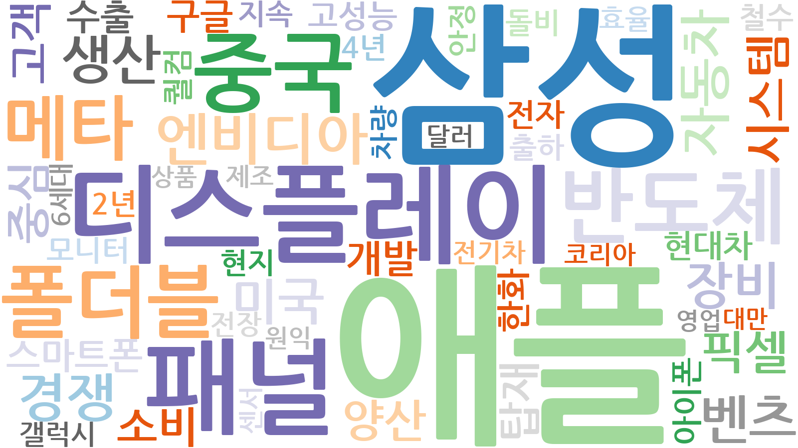
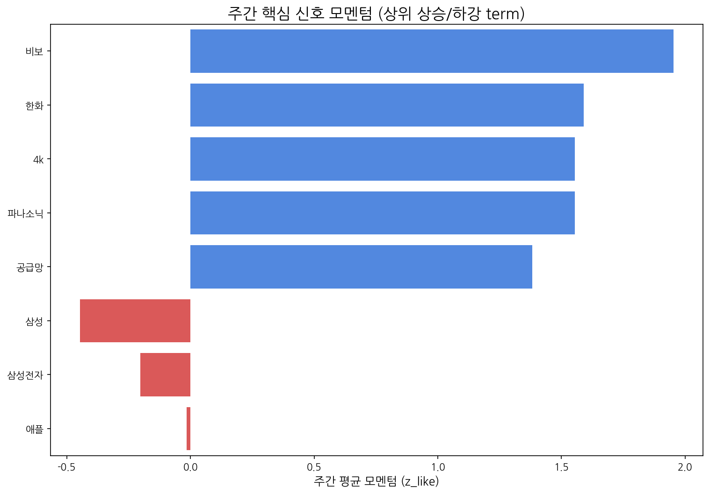

| 키워드 | 주간 누적 점수 |
|---|---|
| 애플 | 5.41145 |
| 삼성 | 4.07395 |
| 디스플레이 | 3.56514 |
| 패널 | 3.35259 |
| 중국 | 1.94259 |
| 반도체 | 1.67403 |
| 폴더블 | 1.67078 |
| 메타 | 1.21676 |
| 엔비디아 | 1.10644 |
| 생산 | 0.934828 |

| 경쟁사 | 주간 총 언급량 | 주간 평균 모멘텀 |
|---|---|---|
| 삼성전자 | 42 | -0.2 |
| lg디스플레이 | 9 | 0.29 |
| boe | 1 | 0.47 |
| term | cur | z_like | total |
|---|---|---|---|
| 한화 | 8 | 3.314 | 37 |
| 구글 | 6 | 2.348 | 19 |
| 비보 | 4 | 1.953 | 4 |
| 4k | 3 | 1.554 | 3 |
| 파나소닉 | 3 | 1.554 | 3 |
AI 기반 주요 신호 해석:
| 핵심 신호 | 주간 총 언급량 | 일별 모멘텀(z_like) 추이 |
|---|---|---|
| 삼성전자 | 42 | -1.3 → 3.5 → 1.1 → -1.8 → -1.3 → -1.4 |
| 삼성 | 33 | -1.7 → 1.5 → 0.6 → -1.0 → -1.3 → -0.8 |
| lg | 18 | -0.4 → 0.2 → 1.5 → -0.1 |
| lg전자 | 18 | -0.5 → 1.4 → 1.1 → -0.3 → -0.6 |
| oled | 17 | -0.4 → 1.6 → 0.1 → -0.6 → 0.3 |
